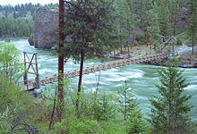

Spokane

Spokan, WA is a suburban city located on the Spokane River in eastern Washington, and is its second most populous city. If you ever visit the city, you'll notice that the Spokane River runs through the city and to the Riverfront Park located in downtown Spokane. You'll also find a wide varities of activities to do such as ski resorts, white-water rafting, camping, and hiking on its trails and by the lakes. Spokane also hosted the first environmentally Worlds Fair at the Expo in 1974.
Manito Park and Botanical Gardens
Before the first European inhabitants, Spokane's first residents were the Spokane tribe. When the city was incorporated in 1881, it originally fell under the name Spokane Falls. In 1891, the city re-incorporated its name officially as Spokane. After gold and silver was discovered late 19th century, the city relied on its mining, timber and agriculture businesses until the 1980s.
Captured By Mark Wagner
Somes fun facts about the city is that it is known as the birthplace of Father's Day. In 1909 in response to the celebration of Mother's Day, Sonora Smart Dodd proposed the idea of celebrating fathers and honoring them as well. The first celebration was held in 1910 at a YMCA in Spokane, WA. The city also has various nicknames, the popular and most widely known nickname is "Hooptown USA". This is due to the city hosting an annual festival called the Spokane Hoopfest which is the worlds largest basketball tournament. Another local nickname, though unofficial is Spokane will be referred to as the "Lilac City". This occurred back in 1906 when two of the first lilac bushes were planted and six years later, Spokanes superintendent received over 100 lilac plants from New York and this brought the renowned beginning of Spokanes Lilca Garden in Manito Park. Another nickname the city has speaks to the city's name itself, which is "Sun City". This is because "Spokane" has Native American origins to the Spokane tribe, and it translates to "Children of the Sun", as the city grew this birthed the nickname, "Sun City".
While taking a visit in Spokane, if you want to explore the outdoors they offer a wide varities of outdoor activities, as well as indoors if you'd rather stay inside! Below is just some of the advetnures they offer. You check out more by following this link here!
| Outdoor | Family Fun | ||
|---|---|---|---|
| Riverside State Park |  | Riverfront Park | |
| Spokane River | Mobius Discovery Center | ||
| Silver Mountain Resort | Cat Tales Wildlife Center |  |
|